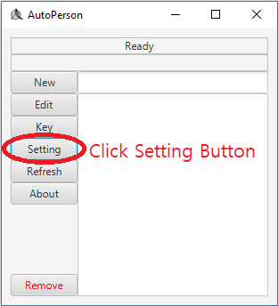
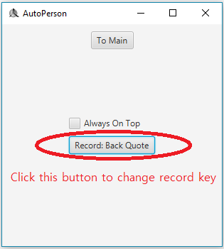
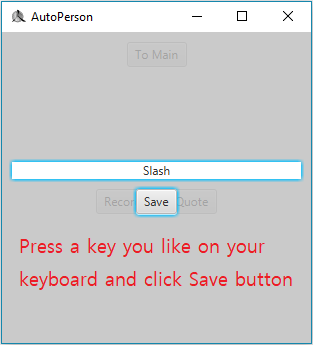
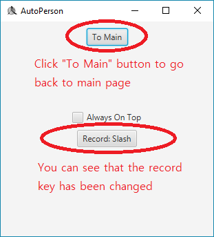

In this tutorial, we will define a keyboard button for recording.
First of all, we need to click Setting button.

You will see a button with text "Record: Back Quote", which means the current record key is Back Quote(`) on your keyboard.
To change the record key, click the button and type a key you want.


Then click save button. You will see the record key has been changed.
Click To Main button to go back to main page.
